Pâte sablée pour tartes salées

Vous trouverez ici comment faire une pâte sablée pour vos tartes salées.
Quoi de mieux que de faire soi même sa pâte sablée. Certains diront qu’ils n’ont pas le temps mais la recette que je vous propose est très rapide et le résultat est 1 000 fois meilleur que les pâtes achetées dans le commerce.
Cette pâte sablée est idéale pour faire de bonnes tartes salées comme sucrées!!
Dans cette recette je mets du sel car j’avais prévu de préparer une tarte salée et plus précisément ma tarte à la tomate (enfin celle de ma belle-mère 😉 ) que vous pouvez retrouver ICI!
A vos tabliers!! C’est parti pour la recette 🙂 Libre à vous ensuite d’y verser la garniture de votre choix!
Ingrédients
- Farine - 250 g
- Beurre mou - 125 g
- oeuf - 1
- eau - 1 càs
- sel - 1 pincée
Instructions
- Dans un grand bol, verser la farine et le sel
- Ajouter le beurre coupé en morceaux et mélanger à nouveau
- Émietter la pâte jusqu'à ce qu'elle devienne sableuse
- Verser l’œuf et l'eau et mélanger
- Fraiser* la pâte (*écraser la pâte avec la paume de la main afin d’amalgamer les différents éléments entre eux)
- Former une boule et envelopper la de film alimentaire
- Laisser reposer 30 min avant de l'utiliser (j'avoue m'en être servie immédiatement et ça n'a posé aucun problème alors si vous êtes pressé n'attendez pas!!)
- Étaler la pâte au rouleau
- Placer la pâte dans votre plat à tarte et positionnez la correctement en vous aidant de vos doigts
- Piquez la avec une fourchette
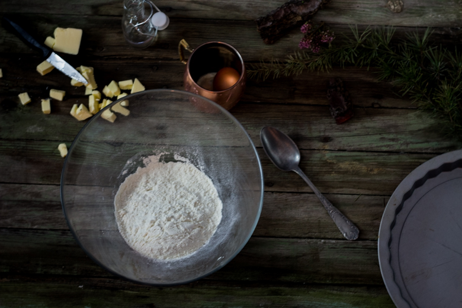
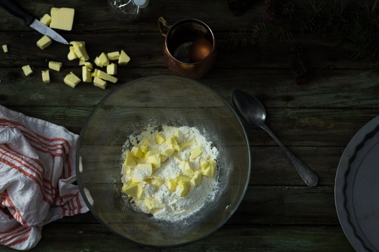
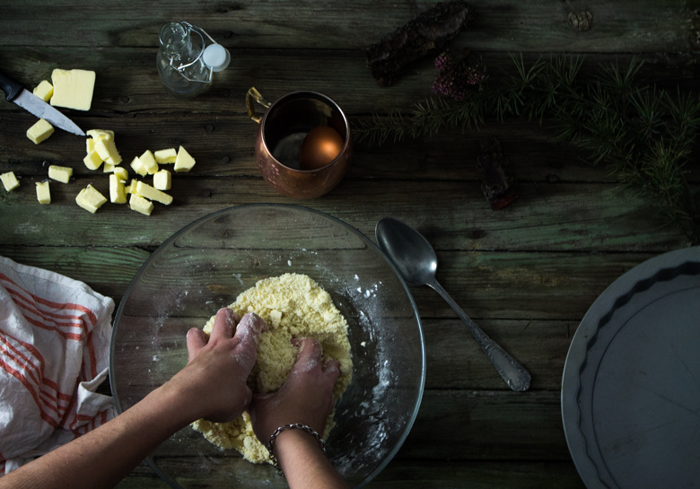
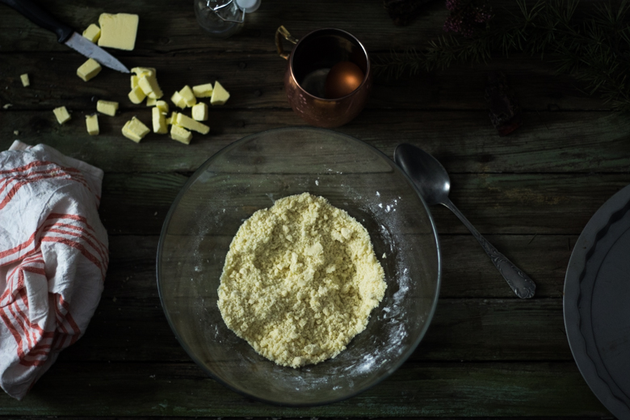
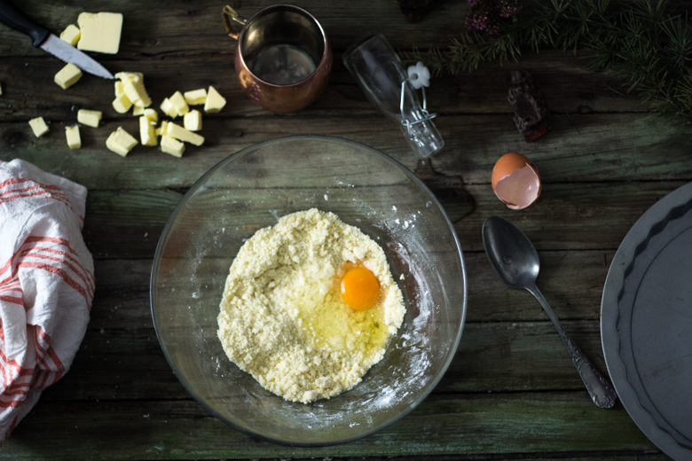
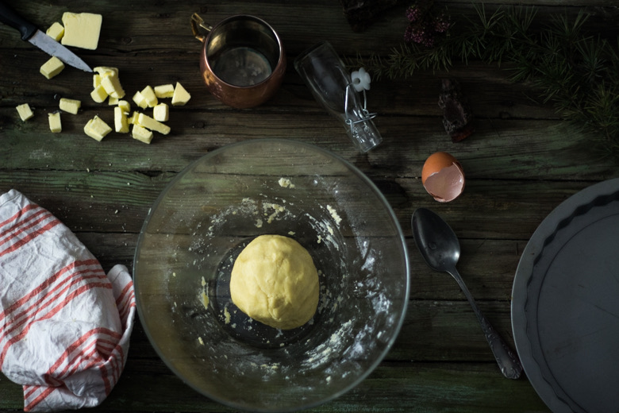
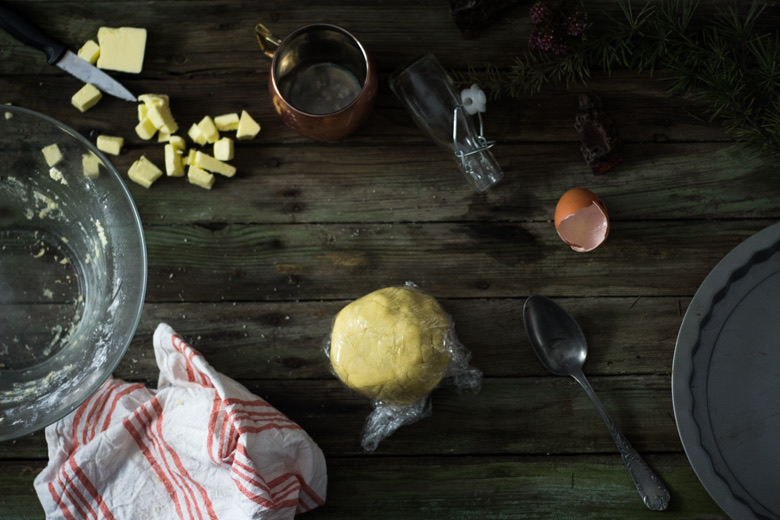
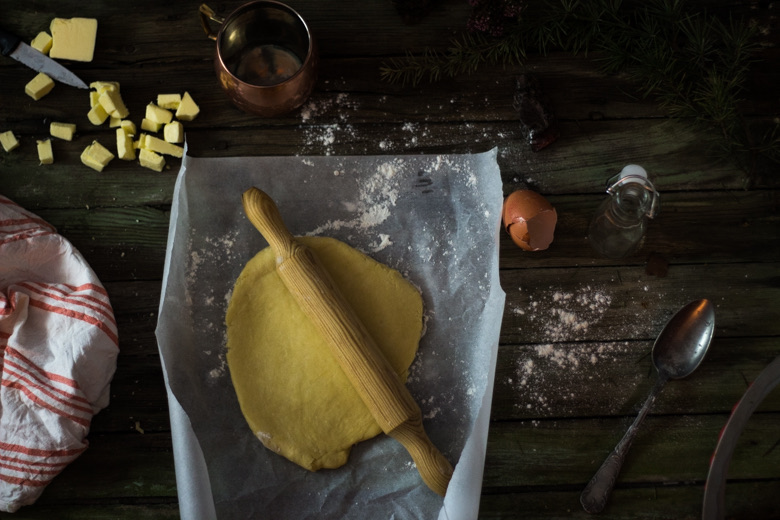
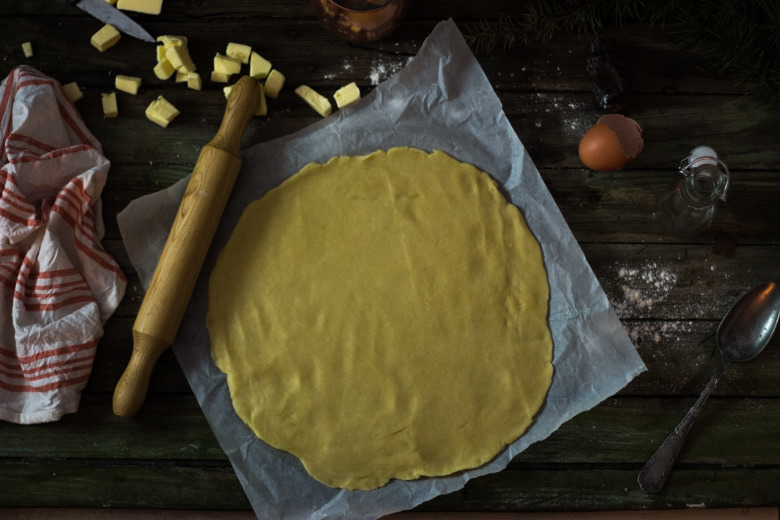
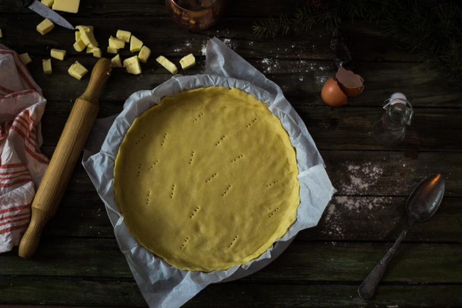
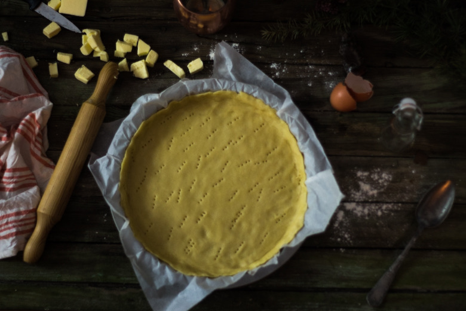
Les tips de la communauté
Pâte très appréciée avec plusieurs retours positifs sur sa facilité d'exécution et son excellent rendu. Les lecteurs trouvent la pâte pratique et savoureuse, particulièrement avec l'ajout d'herbes.
Astuces
- Ajouter du thym pour plus de saveur (conseil très mentionné)
- Possibilité de préparer sans œuf pour une version plus légère
- Utiliser du beurre fondu pour lier la pâte
- Laisser reposer la pâte au frigo ou préférer l'utiliser sans repos pour meilleure maniabilité
- Précuire la pâte sablée seulement selon le type de garniture
Variantes suggérées
- Version avec paprika, curry ou autres épices pour varier les saveurs
- Version pâte brisée sucrée avec sucre pour les tartes desserts
Ajustements signalés
- Si la pâte fissure à l'abaissement, la sortir 10-15 min à température ambiante avant de l'étaler
- La pâte sablée s'effrite plus facilement qu'une pâte brisée, manipuler délicatement
- Se conserve 2-3 jours au frigo dans du film alimentaire